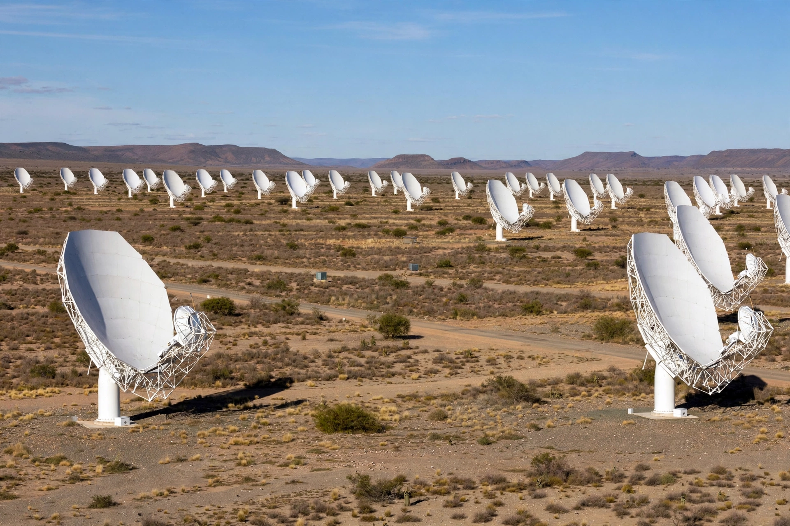

MeerKAT, originally the Karoo Array Telescope, is a radio telescope consisting of 64 antennas in the Northern Cape, South Africa, inaugurated on 13 July 2018.

| MeerKAT | |
|---|---|
| Location | Carnarvon, Northern Cape, South Africa |
| Altitude | 1,038 m |
| Wavelength | 3 cm – 30 cm |
| Built | 2014–2018 |
| Diameter | 13.5 m per dish, 64 dishes |
MeerKAT is a precursor to the Square Kilometre Array (SKA) and was built by the South African Radio Astronomy Observatory. Seven dishes, KAT-7, were built first as a testbed. Construction of MeerKAT began in 2014.
Each antenna is 13.5 metres in diameter with an offset Gregorian design. The dishes are distributed over 8 km, giving high resolution imaging. Receivers cover L-band and UHF band, with S-band added later.
Key science includes surveys of neutral hydrogen, pulsar timing, magnetic fields, and transient sources. MeerKAT discovered a giant radio galaxy and has produced detailed images of the Galactic Centre, including the region around Sagittarius A*.